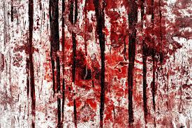

Terrified, Daniel decided to face what he saw in the mirror. He reached out and touched the glass. His reflection distorted, and the girl emerged from the mirror, grabbing his arm with supernatural strength.
The world around him turned black, and he found himself in a place where the walls bled, the wails of the dead filled the air, and amorphous shadows surrounded him, whispering secrets he couldn't understand. Each shadow seemed to watch him, tapping into his deepest fears.

The air was heavy, laden with a metallic, putrid smell. Every step he took seemed to echo in an eternity of echoes, and ghostly figures followed him soundlessly, as if the darkness itself was devouring him.